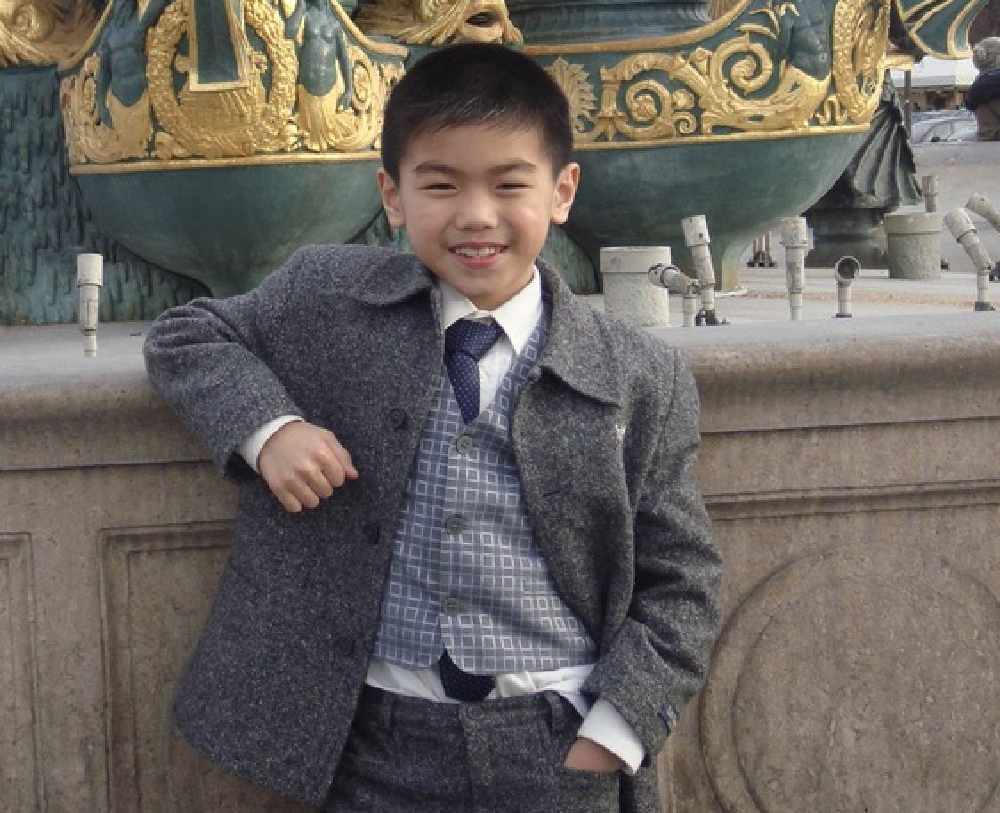
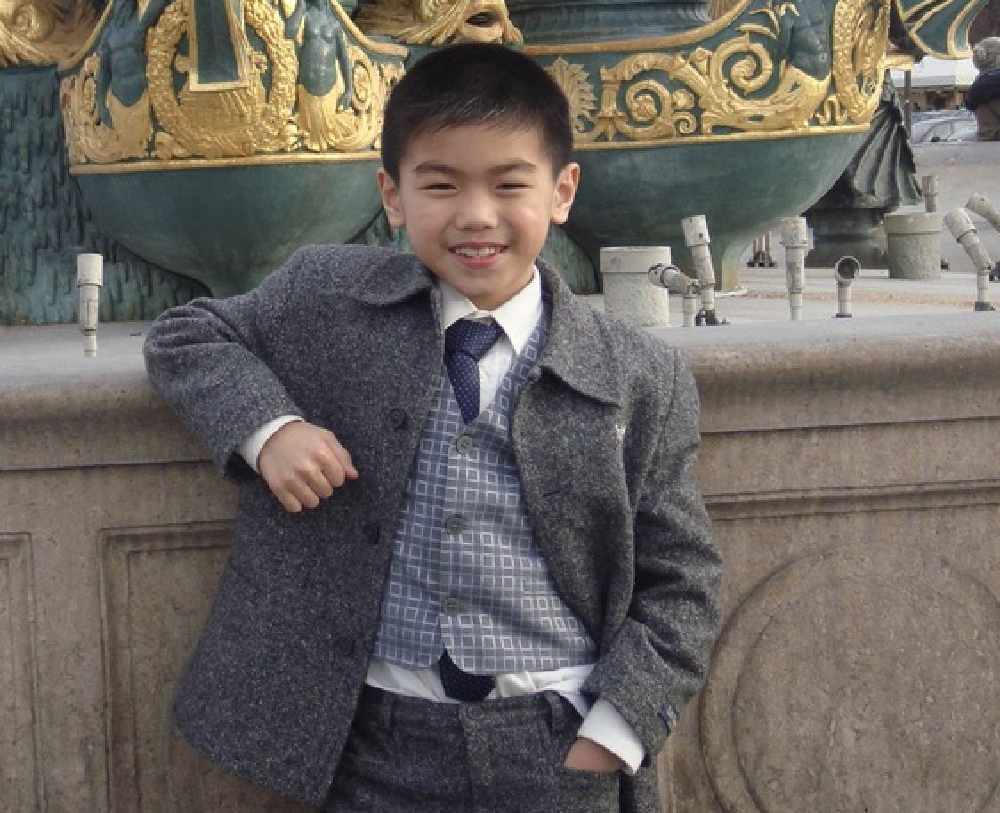

Boubou Photos
Click here to view more Boubou photos
Boubou Lists
Things Boubou love :
- Anime
- Video Games
- Japan

Things Boubou hate:
- Garlic
- Procastinate
- The mess

Click here to view more Boubou photos
Things Boubou love :
Things Boubou hate: